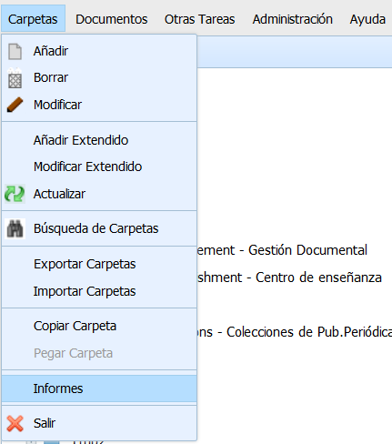
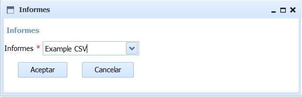

Esta opción permite elegir un tipo de Informe y generarlo, con los datos de las carpetas contenidas directamente (en el primer nivel) en la carpeta actual (siempre que el usuario tenga permiso de lectura sobre ellos).
Para ello debe situarse en la carpeta elegida y pulsar la onción de menú "Carpetas -> Informes". Esta accion presenta un formulario con la lista de informes disponibles. Tras elegir el informe y pulsar Aceptar, se generará y descargará el informe elegido a partir de las carpetas contenidas en la carpeta actual.

